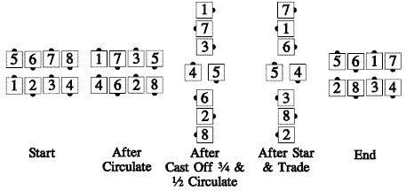

From waves: All Circulate, the centers of each wave Cast Off ¾ while the ends Circulate ½, to create a star between two mini-waves. The star turns half, while those in the mini-waves Trade. Those who meet Cast Off ¾, while the others move up (as in Hourglass Circulate) to become the ends of parallel waves.

Timing: 16